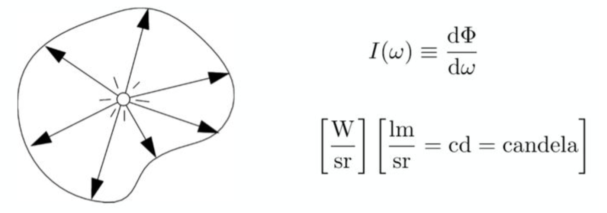
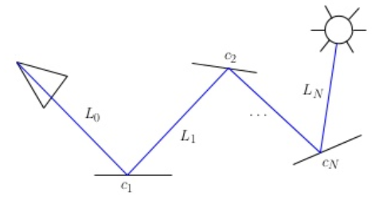
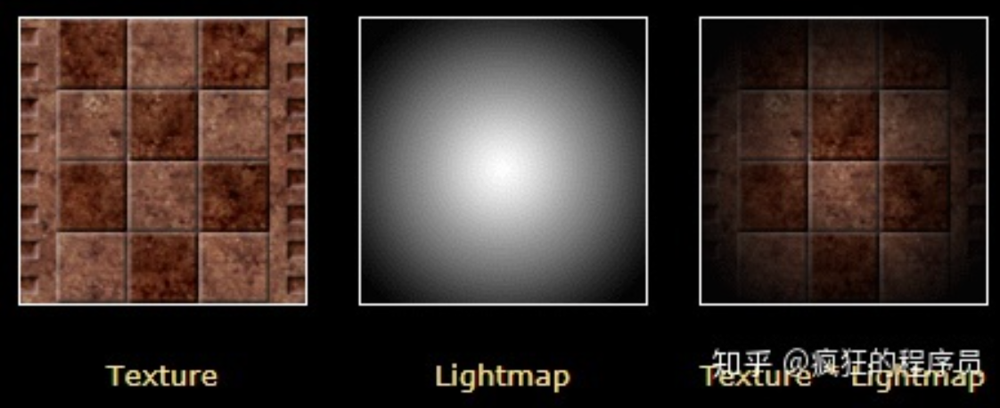

GI draft
什么是GI
 Global illumination (GI) is a family of algorithms that simulate how light interacts and transfers between objects in a scene.
简单的理解就是 GI = direct lighting + indirect lighting, 产生包括漫反射，高光，镜面反射，散射，焦散，阴影等效果。
Direct lighting较为简单，所以以下的技术主要都是针对indirect lighting的计算。
Global illumination (GI) is a family of algorithms that simulate how light interacts and transfers between objects in a scene.
简单的理解就是 GI = direct lighting + indirect lighting, 产生包括漫反射，高光，镜面反射，散射，焦散，阴影等效果。
Direct lighting较为简单，所以以下的技术主要都是针对indirect lighting的计算。
先验知识
radiometry
- radiant energy & radiant flux

- radiant intensity 每单位立体角上的radiant flux 
- irradiance 每单位照射面积所接收到的radiant flux
- radiance
每单位立体角，每单位垂直面积的radiant flux.


render equation


主要思路
最直观的思路 ——— ray tracing type
- tracing from camera
- tracing from light
- tracing from both camera and light
- photon mapping
- instant radiosity
把耗费性能的计算提前处理 ——— precomputed type

- 对光照传输过程进行预计算
- precompute各个方向的入射光radiance
- environment map
- precompute irradiance即各个方向入射光radiance的积分值
- prefiltering
- precompute 可见性和入射光余弦项对应的积分
- PRT
- precompute各个方向的入射光radiance
- 对光照结果进行预计算
- precompute除去Kd和Ks剩余积分项
减少光照计算的geometry粒度
- 把场景的表面细分成一些粒度较大的面片
- radiosity
- 计算场景中空白位置的光照信息，物体的光照由这些位置的结果计算
- light probe
- 把3d空间划分成一些子集，以子集的光照信息作为代表
- voxel
- 将计算限制在屏幕空间
- screen space GI
GI data的存储
- lightmap
- cubemap
- spherical harmonics
- spherical guassian
基本流派
ray tracing
basic theory
- path tracing

- 基本算法步骤
- 选择一个光线，给定参数（x,y,u,v,t）
- 找到与这个光线最近的一个表面交点处
- 随机决定是否计算发射(emitted)或反射(reflected)光。 如果计算发射光：返回 weight Le。 如果计算反射光：weight = reflectance，BRDF pdf随机散射，返回第二步。 算法在path到达光源时终止。
solutions
photon mapping
basic theory
- 基本算法步骤
- 构造photon map 光子从光源发射到场景中。一旦光子和一个几何面相交，相交点和入射方向就会被存在一个叫光子贴图（photon map）的缓存中。
- 利用photon map计算辐射度 用nearest neighbor搜索函数搜索光子贴图，收集临近区域的N个光子 构造一个球体S，把得到的这N个光子包围起来 对每个光子，根据S和BRDF，计算其光通量能量 所有光子的贡献总和将为相交点的辐射强度
- 三种类型的photon map
- caustics photon map
- global photon map
- volume photon map
solutions
instant radiosity
basic theory
- 基本算法步骤
- 从光源上产生N个粒子
- 从光源打出很多light sub-path，这些光会停在某些地方，就认为它停在的地方就变成了新的虚拟点光源光源（VPL) VPLs可以存在一张Reflective Shadow Map(RSM)中
- 用新的VPL计算光照 可以采用光栅化，ray tracing或是其他方法。
solutions
Instant Radiosity for Real-Time Global Illumination
Light Propagation Volumes GI
basic theory
本质上是instant radiosity结合radiance volume的思想。
solutions
radiosity
basic theory

- 基本的算法步骤
- 对场景的表面进行曲面细分
- 计算两两曲面之间的form factors

- 求解radiosity matrix(迭代法) 初始数据为直接光照结果
- 计算每个pixel的光照
- incremental radiosity会在材质或者物体位置等发生变化时动态更新form factors和radiosity
solutions
voxel based
basic theory
- 基本的算法步骤
reference


solutions
screen space GI
basic theory
SSDiffuse

基本的算法步骤
1.采样不同lod的深度图信息并得到其中最大的深度值。（要执行多少次寻找就看你设置多少次pass）
2.用ray marching的方式，并用噪音图采样以圆的周长来找周围的像素点的颜色，这个颜色是根据当前场景颜色做的（所以ssgi一般放到最后处理）。采样的点存储到rt上
3.这时的rt是带有比较明显的锯齿的rt，需要用taa方式过滤一次
4.最后在横向和纵向做两次模糊处理。
5.这样就得到了ssgi的漫反射方向的间接光照了，最后只需要把场景图和这个间接光rt combine一下就好了。
- SSR
solutions
GI数据存储
- light maps


- spherical harmonics

- Spherical harmonics from offline photon mapper
- Texel has irradiance at surface point, as a continuous function on a sphere
- Probes for dynamic objects also stored as SHs
- SH: Great for diffuse, but specular 适合存储低频的信息
- spherical guassian

- Approximate incoming radiance using spherical gaussians
- Intuitive & compact representation for diffuse and specular
- Probes for dynamic objects also stored as SGs
- Extensive implementation details on Matt’s blog [Pettineo16]
现有的解决方案
Enlighten
Enlighten calculates the effect of global illumination in real-time. Lights, materials and objects can be moved and updated at runtime with the global illumination updating in milliseconds.
Enlighten makes use of both lightmaps and light probes to enable efficient rendering. Probes makes lighting of complex meshes with very many small features, such as foliage, are more efficiently lit using probes.

features
- light maps and light probes
- iterate fast Enlighten continuously updates global illumination in the background
- dynamic world outdoor, innerdoor...
- real-time reflections, even for off-camera objects
- emissive surfaces will have almost zero performance cost
优点
- 独立的SDK
- 支持多个平台, mobile, pc, console, VR
- 比较成熟的商业化产品，迭代解决了很多问题
缺点
- CPU计算，因此免不了在GPU-CPU之间更新数据
- enlighten不能够很好处理场景被破坏，结构改变等时候的光照变化情况
- 贵！！
NVDIA VXGI
It provides means to quickly compute a voxel representation of a mesh scene and use that representation with Voxel Cone Tracing for diffuse and specular global illumination, ambient occlusion, and high-quality area lighting.
features
- Indirect diffuse and specular interreflections
- High-quality planar area lights with soft shadows
- Large-scale, stable ambient occlusion
- Dynamic and procedural geometry
- Dynamic lights and emissive materials
- Virtual Reality support, including MRS and LMS
CryEngine SVOGI
features
- Dynamic indirect light bounce from static and most of dynamic objects.
- Large scale AO and indirect shadows from static geometry (vegetation, brushes and terrain).
- Works without pre-baking and does not require manual setup of many bounce lights or light volumes.
Current Limitations
- Large scale AO and indirect shadows may be cast properly only by static geometry.
- GI is not working on some forward rendering components like particles or water.
- Some artifacts like ghosting, aliasing, light leaking and noise may be noticeable in some cases.
- Procedural vegetation and merged vegetation do not cast occlusion or secondary shadows.
- If the camera is teleported to a completely new location it may take up to a few seconds until occlusion is working properly.
- Only objects and materials with enabled shadow map casting may produce proper bounced light.
- For dynamic objects indirect light bounce is working only in the areas near voxelized static geometry.
- Bounce light may have a noticeable delay of 1-2 frames.
- r_Supersampling = 2 makes GI look strange but setting lower LowSpecMode (2X lower) pretty much restores the look and speed. Temporal AA (r_AntialiasingMode 2/3) works just fine.
DXR GI
provides scalable solutions to compute multi-bounce indirect lighting without bake times, light leaks, or expensive per-frame costs.
优点
- 室内外及室内。RTX可避免漏光。
- 游戏运行时。RTX GI可保障性能，可跨GPU扩展，分辨率高达4K，且无噪点。
- 游戏制作。RTX GI可告别烘焙耗时，无需每探头调优，并能够加速当前光照探针工作流程和专业度的提升。
- 任何光照类型：RTX GI可针对点、线、面积照明、天空盒照明和发光物体自动展开工作。
- 引擎：RTX GI可升级现有光照探针引擎数据路径和工具。
- 内容创建：RTX GI采用完全动态的场景，无需人工干预。
- 可扩展性：一条代码路径即可实现所有，从能够避免旧有遗留平台漏光现象的烘焙光照探针，价格较低的GPU上慢慢更新的运行时GI，到发烧友级GPU上的即时动态GI。它能够在发挥高端PC强大功能的同时提供广泛的支持。
缺点
- 每个级联5MB GPU RAM，所有级联和中间层峰值均为20MB
- 在固定时间模式下，1-2毫秒/帧可获最佳性能，在超高固定画质模式下，1-2 Mray/帧可获最佳性能（在2080 Ti上亦如此）
- 在针对其他效果（如光面和阴影光线）使用光线追踪时，可最大限度地减少开销。
- 在画面开发和制作早期就应引入RTX GI。GI能够极大程度上改变光照，比直射光需要更多符合物理原理的几何图形和调优，也为游戏领域带来了全新机遇。
- 基于低端GPU则光照流速较慢（世界-空间延迟，无屏幕-空间重影）
- 阴影图类的偏置参数必须调优至场景比例。
- 无法防止零厚度/单面墙漏光
- 必须与另外的光面全局照明解决方案（如屏幕-空间光线追踪、去噪几何光线追踪或环境探针）配合使用。
UE4 LPV
features
- Computed each frame which allows dynamic material/light/geometry.
- Diffuse and approximated specular material interaction.
- Limited distance (larger volume e.g. 2x would be easy but memory requirements and some computations would grow by 8x).
- Constant detail in world space (it would be better to have more detail nearby and less detail in distance).
- Not affecting translucency.
- Light bounce is not affected by decals.
- Decal shading just works (unlike with baked lighting where the lighting is applied in the base pass before decals get applied).
- Requires compute shader (DirectX 11) support.
- Supports one or more Directional light for light bounce.
- Changing the size at runtime has minor artifacts that fade away over time.
- Emissive lighting for cheap area lights (not currently implemented).
- Occlusion (not currently implemented).
- Point light shadows approximated by occlusion (not currently implemented).
- Secondary occlusion through geometry voxelization which has some performance cost but quite better quality (not currently implemented).
杂
- Ray tracing 光线追踪
- Path tracing 路径追踪
- Photon mapping 光子映射
- Point Based Global Illumination 基于点的全局光照
- Radiosity 辐射度
- Metropolis light transport 梅特波利斯光照传输
- Spherical harmonic lighting 球谐光照
- Spherical Gaussian lightmaps
- Ambient occlusion 环境光遮蔽
- Voxel-based Global Illumination 基于体素的全局光照
- Light Propagation Volumes Global Illumination
- Deferred Radiance Transfer Global Illumination
- Deep G-Buffer based Global Illumination
- screen space GI

{kind=link}
{kind=link}
{kind=link}
{kind=link}
{kind=link}
{kind=link}
{kind=link}
{kind=link}
{kind=link}
{kind=link}
{kind=link}
{kind=link}
{kind=link}
{kind=link}
{kind=link}
{kind=link}
{kind=link}